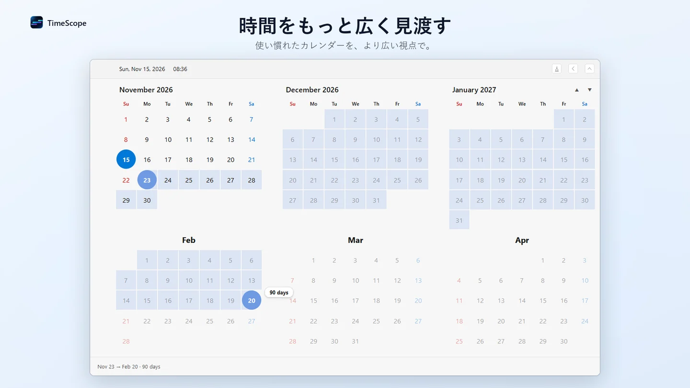
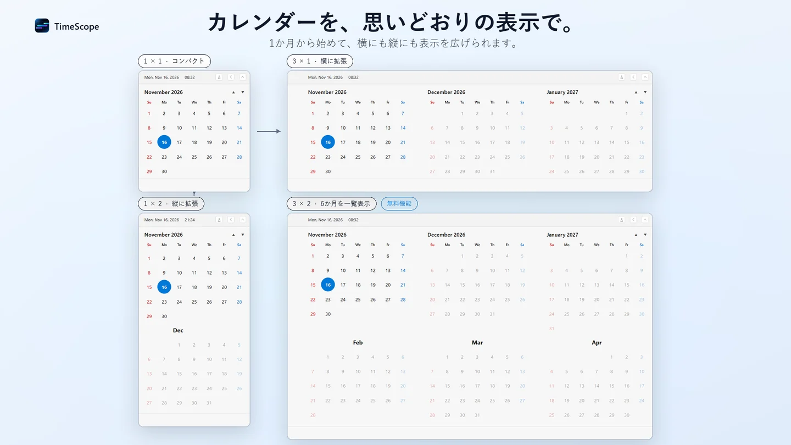
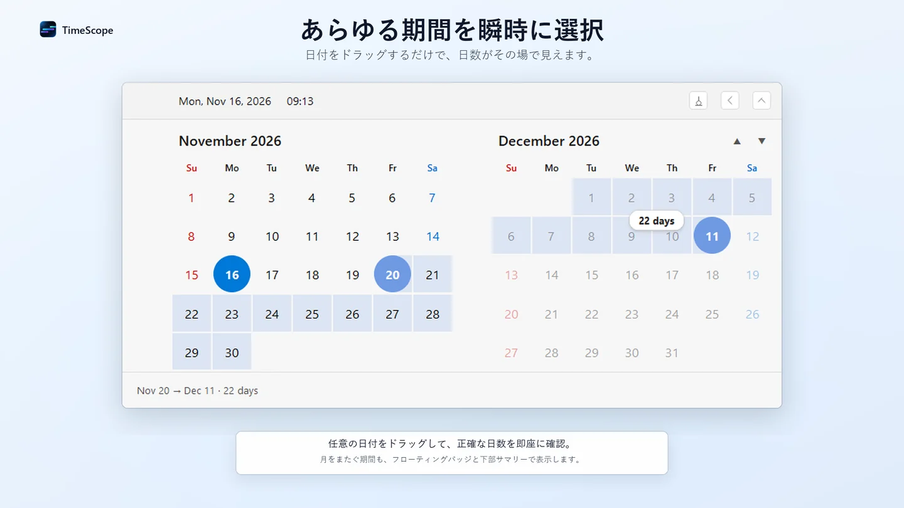
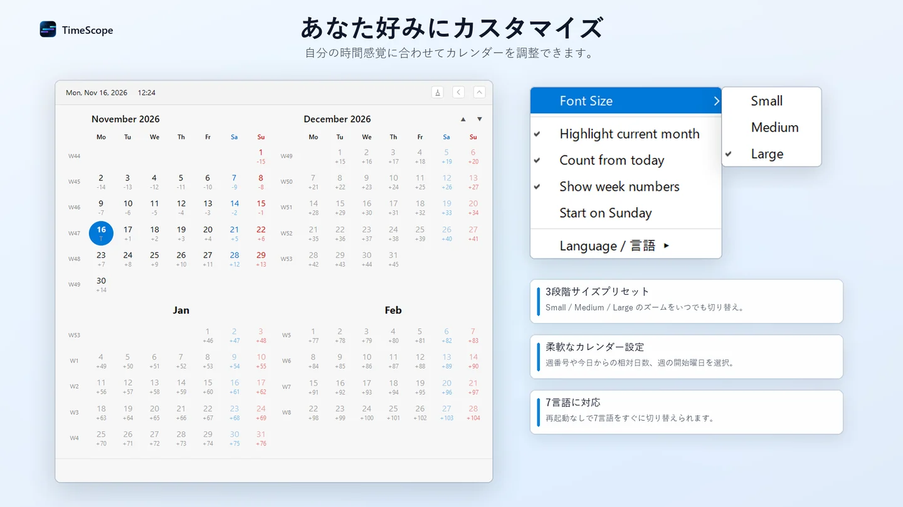
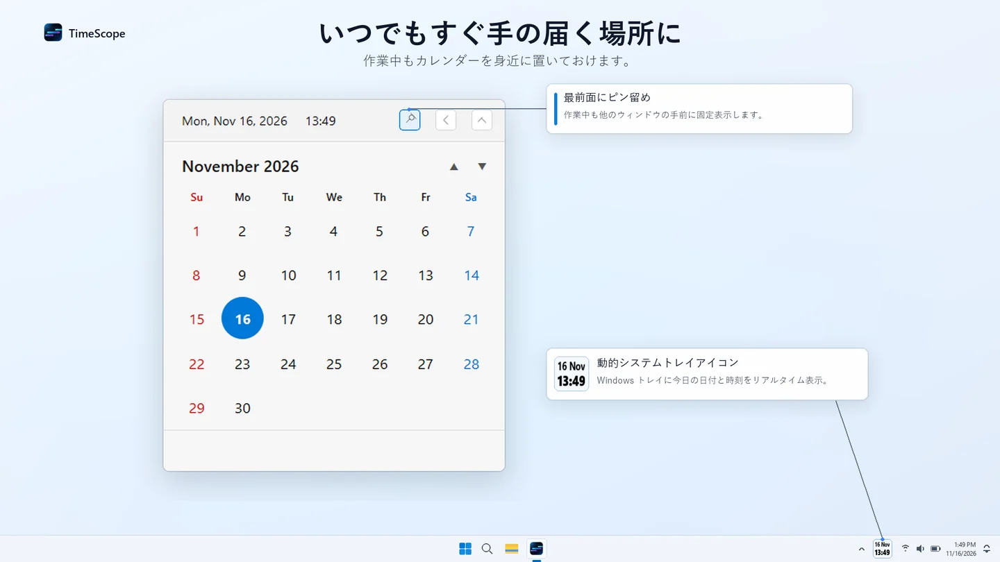

複数の月を同時に見渡す
1か月のコンパクトな表示から始めて、ウィンドウや画面の空き領域に合わせて横方向・縦方向へ柔軟に表示を広げられます。
複数月の同時表示やドラッグによる期間選択、日数の即時確認ができる Windows 向けの軽量デスクトップカレンダー。

素早い日付確認、期間の日数算出、デスクトップ常駐のために設計されています。
1か月のコンパクトな表示から始めて、ウィンドウや画面の空き領域に合わせて横方向・縦方向へ柔軟に表示を広げられます。
日付をドラッグするだけで期間を強調表示し、正確な日数をフローティングバッジと下部サマリーで即座に確認できます。
複数期間の同時比較（マルチバンド）、マルチモニター表示先選択、カスタム休日・稼働日設定を買い切りで追加できます。
予定管理やクラウド同期の煩雑さを持たない、純粋なビジュアルカレンダーです。
1か月表示から始めて、作業スペースに合わせて横にも縦にも表示月数を広げられます。

旅行やプロジェクト期間など、月をまたぐ2つの日付間の日数を数えずにすぐ把握できます。

週の開始曜日や各種表示オプション、UI 言語をメニューから再起動なしで切り替えられます。

他のウィンドウの手前にピン留めして固定表示でき、システムトレイの動的アイコンで今日の日付と時刻をすぐ確認できます。

基本機能はすべて無料。より高度な比較やマルチモニター運用が必要な場合はアプリ内からアップグレードできます。
複数月表示、期間選択・日数カウント、各種カスタマイズをすべて利用可能。
TimeScope アプリ内から Microsoft Store 経由で購入できる買い切りアドオンです。
TimeScope Pro は Microsoft Store のアプリ内購入（買い切り・サブスクリプションなし）として提供されます（基準価格 $4.99 USD／地域により現地通貨・税込価格が異なります）。
Free 版および TimeScope Pro の実画面スクリーンショットをご覧いただけます。
複数月を同時に見渡せるデスクトップカレンダー表示と、90日間の連続期間選択の例。
Windows 10 / 11（x64）向けの TimeScope – Visual Calendar を Microsoft Store から無料でダウンロードできます。
Microsoft Store で入手